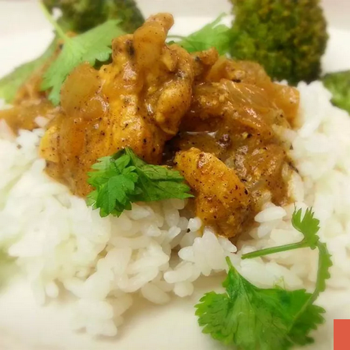

Chicken Recipe

This Indian-inspired creamy chicken curry recipe is similar to a curry I had in India.
The aromatic spices and flavors are a delight to the senses! Delicious with fresh naan and basmati rice.
How to make Chicken Curry Indian style
Ingredients
- 1 small onion, chopped
- 1/2 ginger garlic paste
- salt to taste
- 1/2 kg chicken curry cut
- 1 cup plain yogurt
- 1/2 lemon juiced
- chillie power to taste
Directions
- Heat oil in pan at medium heat, saute onion until lightly brown.
- Stir in garlic paste and salt for 2 minutes.
- Add chicken pieces, yogurt and milk. Bring to boil, and simmer for 20 to 25 minutes.
- Stir in lemon juice and chilli power. Simmer for 5 minutes more.
- Serve hot and enjoy!
Back to home page